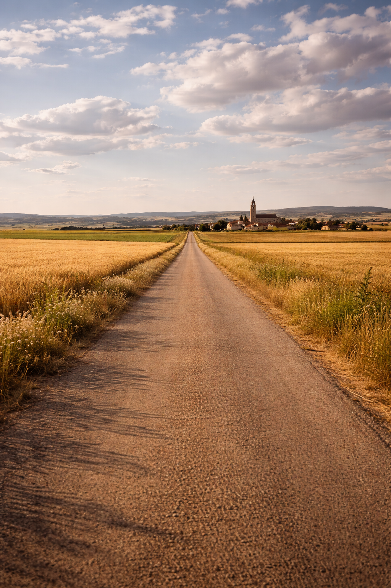

UDR nació de una idea simple pero necesaria: acercar la tecnología diagnóstica de alta resolución a quienes más dificultades tienen para acceder a ella. Lo que comenzó como un proyecto para detectar una necesidad real en el sistema sanitario español se convirtió en una propuesta concreta, respaldada por el conocimiento técnico en imagen para el diagnóstico y medicina nuclear.
Desde el primer momento identificamos un patrón que se repite en miles de municipios españoles: pacientes que esperan meses para una prueba diagnóstica y que además deben recorrer decenas de kilómetros para realizarla. Una doble penalización que afecta especialmente a personas mayores, con movilidad reducida o sin recursos para desplazarse.
La respuesta no era construir más hospitales. Era llevar la tecnología hasta el paciente. Con esa convicción, y aprovechando los avances en equipamiento médico móvil, desarrollamos un modelo de servicio que se integra en el sistema sanitario público sin necesidad de nuevas infraestructuras, sin cambiar los hábitos del médico ni del paciente, y con la misma calidad diagnóstica que cualquier hospital de referencia.
Así nació UDR.
España cuenta con más de 8.000 municipios, la mayoría de ellos con menos de 5.000 habitantes. Millones de personas en zonas rurales se enfrentan cada día a desplazamientos de decenas de kilómetros para acceder a pruebas diagnósticas básicas, con listas de espera que se alargan semanas o meses.
Esta brecha no es solo geográfica. Es una desigualdad real en el acceso a la salud. Los pacientes rurales no solo esperan más, sino que asumen un coste personal, económico y emocional que los residentes urbanos simplemente no tienen.
UDR existe para cerrar esa brecha.

Nuestra misión es garantizar que cualquier paciente, independientemente de donde viva, tenga acceso a un diagnóstico por resonancia magnética de calidad hospitalaria, cerca de su domicilio y dentro del circuito de la sanidad pública.
Creemos que la calidad asistencial no puede depender del código postal del paciente.
Trabajamos con tecnología de referencia hospitalaria y profesionales especializados.
Con los pacientes, con los médicos y con las administraciones sanitarias que apuestan por soluciones innovadoras.
Un modelo eficiente que optimiza recursos públicos sin necesidad de nuevas infraestructuras fijas.